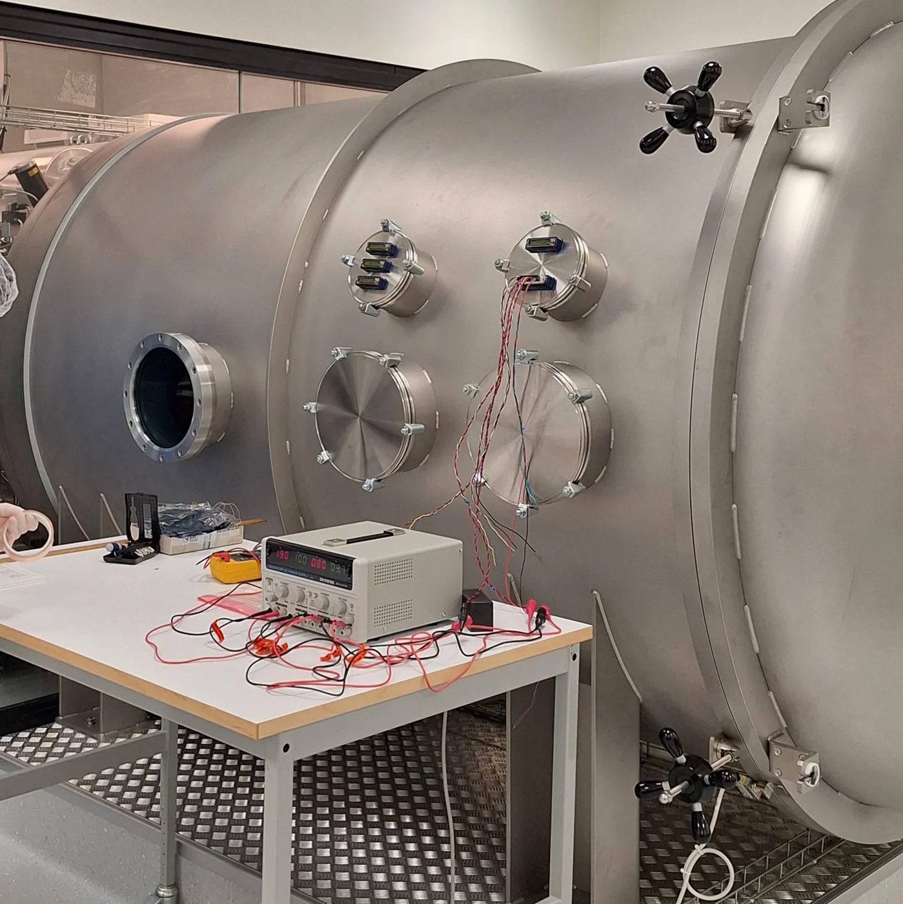

Thermal engineering
Thermal-vacuum coating tests.
Characterising spacecraft surface coatings inside KTH’s Space Sauna vacuum chamber.

01 / THE QUESTION
Project objectives
This group experiment examined the thermal response of four coated aluminium samples: gold plating, black anodisation, SurTec 650 and Astral ATU2230. Heater inputs and measured temperatures were used to investigate radiative exchange and transient behaviour.
02 / MY CONTRIBUTION
Methods and contribution
- Participated in laboratory work, report preparation and peer review, as recorded in the contribution table.
- The team prepared and suspended instrumented samples inside the thermal-vacuum chamber, then adjusted heater power and recorded temperature histories.
- The analysis estimated emissivity and effective heat capacity, accounting for parasitic conduction and departures from ideal equilibrium.
03 / THE OUTCOME
Results
The measurements distinguished high-emissivity anodised and Astral surfaces from low-emissivity gold and SurTec surfaces. Estimated conductive losses were around 6% of the heat budget, making them a meaningful correction to the radiation-dominated balance.
04 / SCOPE & LIMITATIONS
The LED illumination was unstable, so absorptivity could not be determined reliably. Heat-capacity estimates were sensitive to temperature slopes, measurement noise and the isothermal-sample assumption.
05 / PROJECT FIGURES
Figures and reference images
Select an image to view it at a larger size.
AUTHORSHIP & SOURCE
Group authors: Brian Bertacco, Andreas Wangård, Jonas Planck, Samuele Cuzzi, Tobia De Benedictis and Felice Venuti. Brian’s lab, report and review participation is documented on PDF p. 10.
Download original report (PDF) ↓